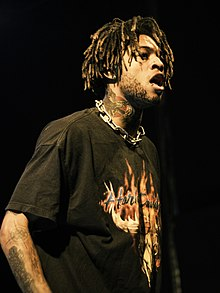
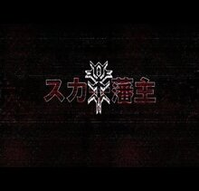

Marius Lucas Antonio Listhrop (nascido em 19 de junho de 1994)Mais conhecido como Scarlxrd
(pronuncia-se "Scarlord"), é um rapper britânico. Ele é conhecido por seu estilo musical
único combinando elementos de trap e heavy metal, e é considerado um pioneiro do gênero trap
metal. Anteriormente uma personalidade do YouTube conhecida como Mazzi Maz Scarlxrd
começou uma carreira na música como vocalista da banda de nu metal Myth City Antes de estrear
como rapper sob seu apelido de Scarlxrd. Ele ganhou destaque após o videoclipe de seu single
"Heart Attack", que ganhou atenção significativa com mais de 95 milhões de visualizações no
YouTube em março de 2022. Desde então, ele lançou outras músicas de sucesso, como "King,
Scar", "6Feet", "Berzerk" e "Head Gxne".
Carreira no YouTube
Antes de iniciar uma carreira na música, Listhrop começou a enviar vídeos no YouTube como Mazzi
Maz. Sua personalidade no site foi descrita como um YouTuber "alegre" e "super
sorridente" que gravava e publicava vlogs em seu quarto. Ele muitas vezes colaborou com
amigos e colegas personalidades do YouTube Sam Pepper e Caspar Lee. Do final de 2013 a meados de
2014, Listhrop e Pepper embarcaram em uma turnê mundial de comédia e música, "WDGAF Tour". Em
fevereiro de 2017, Listhrop removeu todos os seus vídeos Mazzi Maz de seu canal no YouTube e
desde então o renomeou para seu apelido Scarlxrd. Em uma entrevista de 2018, Listhrop descreveu
seu tempo como uma personalidade do YouTube e postou vídeos no site como "destruindo a alma".
Carreira musical (2014–2016: Myth City)
Em 2014, Listhrop fundou a banda de nu metal/rap rock Myth City na qual se apresentou como
vocalista. Listhrop também descreveu o som da banda como uma fusão de rap e grindcore o canal
da banda no YouTube rapidamente ganhou seguidores consistindo principalmente de fãs de Mazzi
Maz que deram ao grupo uma recepção mista; os fãs responderam positivamente aos vocais gritados
de Listhrop mas ficaram confusos com o contraste entre o estilo musical áspero da banda e os
vídeos "smiley" do YouTube de Listhrop. Myth City lançou seu EP de estreia auto-intitulado em 28
de fevereiro de 2015.
Primeiros Álbuns e Avanços (2016-2018)

Em agosto de 2016, Scarlxrd estreou seu novo apelido com o lançamento de "Girlfriend". O
videoclipe o mostra desmascarado e rimando em uma "faixa de hip-hop tropical úmida". No final de
2016, ele lançou dois álbuns seu álbum auto-intitulado (estilizado em caracteres japoneses
comoスカー藩主) E Rxse . Após o lançamento de mais dois álbuns, Cabin Fever e Chaxsthexry, em abril de
2017 Scarlxrd lançou o vídeo de "Chain$aw" em 31 de maio; uma semana depois, ele lançou o
videoclipe de "King, Scar". Em 23 de junho, ele publicou o videoclipe de "Heart Attack" e o vídeo
rapidamente ganhou popularidade; Ele credita sua consistência em lançar videoclipes,
especificamente os vídeos de "Chain$aw" e "King, Scar", pelo aumento da popularidade do vídeo. Em
29 de setembro ele lançou seu quinto álbum de estúdio Lxrdszn. “King, Scar” e
“Chain$aw” também foram lançados como kits de música em Counter-Strike: Global
Offensive. Em fevereiro de 2018, foi anunciado que Scarlxrd se apresentaria nos festivais de
Reading e Leeds de 2018. Em abril, foi revelado que ele seria apresentado no segundo álbum de
estúdio do Carnage Battered Bruised & Bloody lançado em 13 de abril; Scarlxrd se apresentou na
música "Up Nxw". Em 4 de maio, ele lançou seu sexto álbum de estúdio e estreia pela gravadora
Dxxm via Island Records.
Continuação de Lançamentos de Grandes Gravadoras (2018-2020)
Depois de lançar singles de meados de 2018 ao início de 2019 em antecipação a um próximo álbum,
incluindo "Hxw They Judge", "Berzerk", "Sx Sad" e "Head Gxne", Scarlxrd anunciou seu sétimo álbum
de estúdio, Infinity que foi lançado em 15 de março de 2019. Ele foi indicado no Kerrang! de
2019! Prêmios de Melhor Revelação Britânica. Mais tarde naquele ano, "The Purge" foi destaque na
primeira temporada da série de televisão Euphoria da HBO. Scarlxrd lançou seu segundo álbum de
2019 intitulado Immxrtalisatixn em 4 de outubro. Ele lançou seu terceiro álbum de estúdio de 2019
em 13 de dezembro, intitulado Acquired Taste Vxl 1. Em 19 de dezembro, "I Can Dx What I Want" foi
anunciada como a música tema oficial do evento NXT UK, NXT UK TakeOver: Blackpool II.
Lançamentos Independentes (2021-presente)
Em 14 de janeiro de 2021, Scarlxrd lançou "Let the Wxrld Burn" por meio de sua gravadora
independente Lxrd Records marcando seu primeiro lançamento desde sua saída da Island Records. Em
5 de fevereiro Scarlxrd lançou seu 12º álbum de estúdio Dxxm II, uma sequência de seu projeto de
2018 Dxxm. Mais tarde naquele ano, ele apareceu em "Dead Desert" de Trippie Redd, que também
contou com Zillakami. Scarlxrd também lançou um EP colaborativo com Ghostemane intitulado
Lxrdmage
Artística

A combinação de música trap e heavy metal de Scarlxrd foi apelidada de "trap metal" um estilo
do qual várias publicações o descreveram como um pioneiro. Ele é frequentemente associado a
artistas de rap do SoundCloud. Em um artigo de 2018, a NME o descreveu como um "artista de
hip-hop forasteiro atormentado". Eles também o chamavam de "suserano do rap metal" e seu estilo
inclui "vocais gritados batidas claustrofóbicas e rajadas de guitarra distorcida", além de
chamá-lo de uma fusão de metal e "rap niilista". Scarlxrd cresceu ouvindo heavy metal e cita
artistas de hip hop, incluindo Missy Elliott , Nelly e Eminem como influências. Ele também
afirmou que formou o Myth City depois de ouvir Linkin Park, Rage Against the Machine, Incubus e
Deftones. Ele é conhecido por substituir a letra "o" por "x", que é mostrado em seu nome
artístico e nos títulos das músicas. A estética visual de Scarlxrd em seus videoclipes e estilo
de roupa é fortemente influenciada pela cultura japonesa, especialmente anime sua máscara
cirúrgica de assinatura, que ele usa para se distanciar de sua imagem no YouTube Foi inspirada
no mangá japonês Tokyo Ghoul. Ele começou a usar a máscara com menos frequência após o lançamento de
Infinity, Scarlxrd também citou a banda americana de heavy metal Slipknot como uma inspiração para
seus visuais.
Discografia(Álbuns de estúdio)
Lista de álbuns de estúdio, com posições nas paradas selecionadas